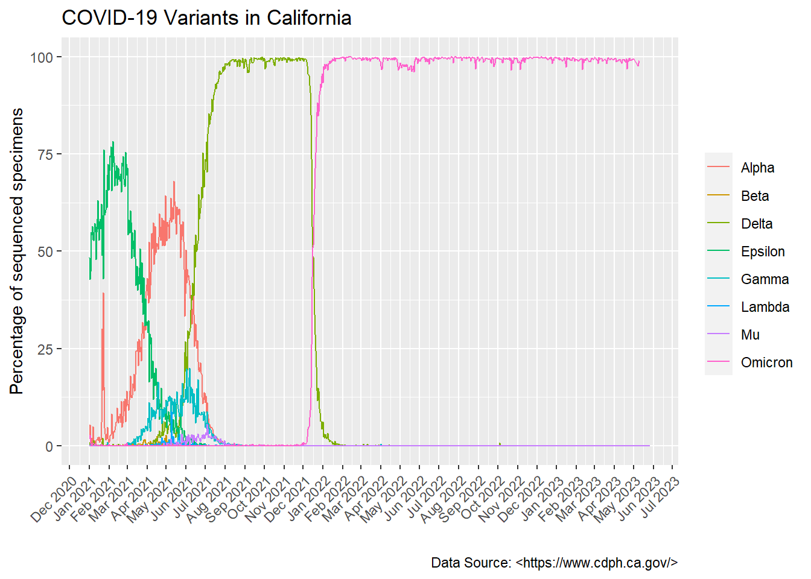

variant_data <- read.csv("covid19_variants.csv")1st Year Exam
I will use read.csv() to import the COVID-19 variant data from the California Health and Human Services open data site
In this next chunk, I will load the approrpiate packages to help with graphing of the data
library(lubridate)Warning: package 'lubridate' was built under R version 4.2.2Loading required package: timechangeWarning: package 'timechange' was built under R version 4.2.2
Attaching package: 'lubridate'The following objects are masked from 'package:base':
date, intersect, setdiff, unionlibrary(dplyr)
Attaching package: 'dplyr'The following objects are masked from 'package:stats':
filter, lagThe following objects are masked from 'package:base':
intersect, setdiff, setequal, unionlibrary(ggplot2)Warning: package 'ggplot2' was built under R version 4.2.2Using as.Date to convert the characters representing the date to the class “Date”
variant_data$date <- as.Date(variant_data$date)The data in the data table includes the sum of the variants but I do not want that on my plot so I am going to filter those rows out
variants_only <- filter(variant_data, percentage<100)
head(variants_only)library(scales)Using as.Date to convert the characters representing the date to the class “Date”
variant_data$date <- as.Date(variant_data$date)The data in the data table includes the sum of the variants but I do not want that on my plot so I am going to filter those rows out
variants_only <- filter(variant_data, percentage<100)
head(variants_only) date area area_type variant_name specimens percentage
1 2021-01-01 California State Epsilon 29 48.33
2 2021-01-01 California State Other 29 48.33
3 2021-01-01 California State Gamma 0 0.00
4 2021-01-01 California State Delta 0 0.00
5 2021-01-01 California State Beta 0 0.00
6 2021-01-01 California State Alpha 1 1.67
specimens_7d_avg percentage_7d_avg
1 NA NA
2 NA NA
3 NA NA
4 NA NA
5 NA NA
6 NA NAThe data has unclassified variants as “Other” but I do not want to plot those so I am going to filter those out as well.
<<<<<<< HEAD
=======
>>>>>>> 90ea6e52e894d215451fc764d6cc7e056eed6f81
variants_name <- filter(variants_only, variant_name != "Other")
head(variants_name)variants_name <- filter(variants_only, variant_name != "Other")
head(variants_name) date area area_type variant_name specimens percentage
1 2021-01-01 California State Epsilon 29 48.33
2 2021-01-01 California State Gamma 0 0.00
3 2021-01-01 California State Delta 0 0.00
4 2021-01-01 California State Beta 0 0.00
5 2021-01-01 California State Alpha 1 1.67
6 2021-01-01 California State Omicron 1 1.67
specimens_7d_avg percentage_7d_avg
1 NA NA
2 NA NA
3 NA NA
4 NA NA
5 NA NA
6 NA NA
<<<<<<< HEAD
#Here I will plot the filtered data using ggplot. I will plot the date and percentage for each variant using geom_line() and will color the data by the variant name to be able to distinguish the data for each variant.
variant_plot <- ggplot(variants_name)+
aes(date, percentage, color=variant_name )+
geom_line()
#This line of code will edit the x and y labels. Add the title and caption and remove the label for the key
variant_plot <- variant_plot+labs(x="", y="Percentage of sequenced specimens", title="COVID-19 Variants in California", caption="Data Source: <https://www.cdph.ca.gov/>", color="")
#this next line of code will change the scale of the x axis and will make it so the x axis ticks are 1 month apart. Additionally, the date_labels= will make it so the format is in Month and Year
variant_plot <- variant_plot+scale_x_date(date_breaks = "1 month", date_labels = "%b %Y")
variant_plot <- variant_plot+ theme(axis.text.x = element_text(angle =45, hjust=1))Now to actually see the plot!!!
variant_plotvariants_name$date <- as.Date(variants_name$date)variant_plot <- ggplot(variants_name)+
aes(date, percentage, group=variant_name, color=variant_name )+
geom_line()
variant_plot <- variant_plot+labs(x="", y="Percentage of sequenced specimens", title="COVID-19 Variants in California", caption="Data Source: <https://www.cdph.ca.gov/>")
variant_plot <- variant_plot+scale_x_date(date_breaks = "1 month", date_labels = "%b\n%Y")
variant_plot <- variant_plot+ theme(axis.text.x = element_text(angle = 45))
variant_plot